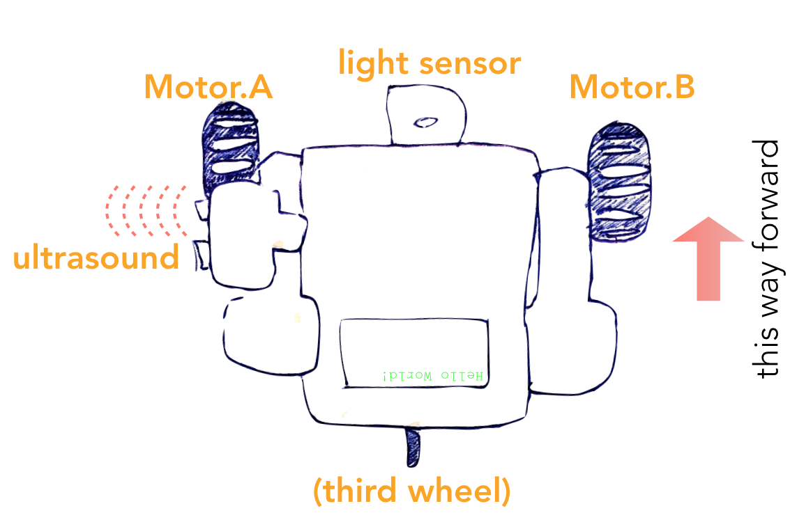

This week's exercises will be done partly on your own (just as usual) and partly at the workshops. You will get the points only by attending a workshop.
Each student should register to one workshop (and attend it). Registration is done through:
In this task, you will get to play with Lego Mindstorms NXT 2.0 robots. We will provide you with a pre-built robot, so unfortunately, no building is involved. The robot is a simple "car" with three wheels, a light sensor, and an ultrasonic sensor.
Two of the wheels, the left and the right one, are connected to
independent motors (Motor.A and Motor.B),
and you can instruct them to rotate either forward or backward.
To turn right, for example, you can rotate the left wheel forward and
keep the right wheel still.
The light sensor is in the front of the robot and points directly toward the floor. The ultrasonic sensor is attached to the left side of the robot, approximately 10cm behind the front of the robot, and it points directly to the left. See the drawing below to get a better idea (maybe).
Note: You need not install the leJOS environment on your own computer. We will provide laptops with all the required tools to write Java code, compile, and connect to the robot. You will just have to code "blind" without being able to compile and test before the workshop. You'll have to finalize and debug your solution at the workshop.
The lecture slides contain some basic instructions about leJOS programming. Here is some more material about the API:
Task: Make the robot follow a path marked by white tape on the floor. In the beginning, the robot will be placed on the path and it should move ahead, following the path. (You don't have to care what happens when the path ends.) You will be able to detect the path by using the readings from the light sensor.
Use the following template to write a sketch of your solution. You should store your solution on a USB stick (or put it online) so that you can access it from the laptop at the workshop. [download code]
package org.lejos.example;
import lejos.nxt.*;
import lejos.robotics.navigation.DifferentialPilot;
/**
* Write your code in main()
*/
public class HelloWorld {
static DifferentialPilot pilot = new DifferentialPilot(5.6, 17.5f, Motor.A, Motor.B);
static UltrasonicSensor ultra = new UltrasonicSensor(SensorPort.S2);
static LightSensor light = new LightSensor(SensorPort.S1);
public static void main(String[] args) {
System.out.println("I'll be back!");
Button.waitForAnyPress();
}
}
Hint: Try to solve the task using as simple program logic as possible. In particular, it is not necessary that you maintain a detailed model of the environment (the path) and the position of the robot with respect to it. A useful strategy is to try to follow the right (or left) edge of the path, where the light readings change from high (path) to low (floor). You'll be able to estimate the actual values by printing out the readings on the robot screen at the workshop.
Please use the registration link to the Robotics Workshops in Exercise 1 above.
Task: "Park" the robot. The robot will be placed on a "street" that continues straight ahead, and where there are no obstacles. Drive ahead and use the ultrasonic sensor to detect whether there are obstacles to the left of the robot. Find an minimum 40 × 40 cm parking spot, and drive the robot into it.
Hint: The DifferentialPilot class will probably
be useful. It can be instructed to drive ahead a given distance
by travel(distance). You can also set the robot moving
by calling travel(distance, true), in which case the
command flow return to the next line of your code immediately,
instead of waiting that the robot has first
travelled distance cm. You can then query whether the
robot is still moving by
isMoving().
The development of this course relies on your feedback. To give you a concrete incentive to give feedback, you'll even get exercise points for giving feedback!
The deadline for this exercise is November 1 (one week after the course exam).
Give feedback in both of the following ways:
- Anonymously through the department feedback system: link to feedback system
- By email to the lecturer: teemu.roos@cs.helsinki.fi
To get 1p for item 1, mention in your email that you have submitted the anonymous feedback through the feedback system — after actually doing so, of course.
Don't worry if the content is overlapping.
Robotics
On this final part, we will encounter a Grand Challenge of AI, namely Robotics. Building and especially programming robots so that they can operate in complex, real-world scenarios requires a combination of virtually all areas of AI. For example:
- computer vision and speech recognition for sensing the environment
- natural language processing, information retrieval, and reasoning under uncertainty for processing instructions and predicting consequences of potential actions
- cognitive modeling and affective computing for interacting and working together with humans
Many of the robotics-related AI problems are best approached by machine learning, so it is a very central branch of AI for robotics.
Of course we cannot solve all the open problems in robotics. Our objective is to first appreciate the challenges that operating under constraints on the sensor capabilities of robots, and second, to learn to implement simple functionalities despite such contraints. In practice, this will be done in fun robotics workshops where you'll be able to get your hands on actual robots. (Don't worry, no terminators involved.)
| Theme | Objectives (after the course, you ...) |
| Digital Signal Processing and Robotics |
|
On the Mindstorms Robots
We'll approach robotics in a very practical way, which is the only way to become familiar with the unique nature of robotics AI. The robots used on this course are Lego Mindstorms robots. They may be toys, but make no mistake, they can also teach us many things about operating in the real world with limited sensor capabilities.
The system has a graphical programming environment but we'll use a
more flexible Java-based leJOS environment that
has a well-documented API for controlling the robot.
Movement: Controlling the wheels
The kits that we'll provide you at the workshops (see Exercises 6.1
and 6.2 above) have two motors, which you can control through the
NXTRegulatedMotor class. The system automatically
constructs two (actually three) instances of this
class, Motor.A and Motor.B. They allow
low-level control of the two wheels in the robot through
methods such as forward, backward, and
stop.
Especially useful for Exercise 6.2 is also the
higher-level DifferentialPilot class. The constructor
takes as arguments the wheel diameter (in cm), the axis span
(in cm), and the two motor objects. The following arguments work
with our kits.
static DifferentialPilot pilot = new DifferentialPilot(5.6, 17.5f, Motor.A, Motor.B);
The pilot object can be used to drive the robot
forward or backward a given distance (in cm) by calling
pilot.travel(distance).
Sensing
The Mindstorms packages include touch, sound, light, and ultrasonic sensors. We need only the last two of these.
A light sensor object is constructed by calling the constructor
with the sensor port to which the sensor is connected as an argument.
The object returns the lightness value sensed by the sensor
with the method readValue.
LightSensor light = new LightSensor(SensorPort.S2);
int l = light.readValue();
Note that the lightness value depends on the lighting conditions, and in practice it is best to "calibrate" it manually by simply printing out values from the sensor on the robot display. It is okay to hard-code a threshold that detects light vs dark objects in your code.
An ultrasonic sensor can be constructed similarly. Remember to check the correct sensor port by following the cable connecting the sensor to the main brick.
UltraSonicSensor sonic = new UltraSonicSensor(SensorPort.S3);
int d = sonic.getDistance() // 0-255 (cm)
If no echo is caught, the reading wll be 255.